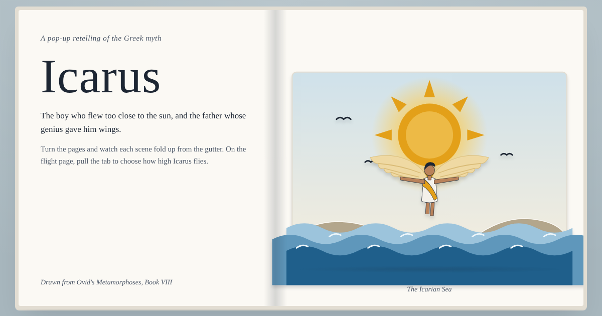
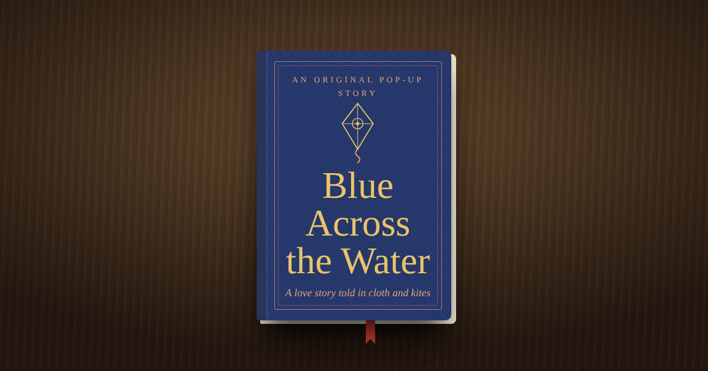

Old stories retold as cut-paper pop-up books. Open one, turn the pages, and watch each scene fold up off the page.

The boy who flew too close to the sun, and the father whose genius gave him wings.

An indigo dyer and a kite-maker fall in love across a lagoon, talking only in patterns.